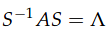

本周清明回家，只完成2节的Matrix学习，Lesson21～Lesson22
为保持博客的完整性，下周的Matrix依旧会放到本篇博客中
第四周完成了Less23~Lesson24,继续在这里记录。
Eigenvalues and eigenvectors
定义
AX = λX
A matrix A acts on vectors x . Eigenvectors are vectors for which Axis parallel to x。
计算
det(A-λI) = 0
复数eigenvalues
对称阵的特征值为实数，反对称阵的特征值为纯虚数
Symmetric matrices have real eigenvalues
For antisymmetric matrices like Q, for which AT = −A, all eigenvalues are imaginary (λ=bi).重复的eigenvalues
非重复的eigenvalues用于相互独立的eigenvector，重复的eigenvalues可能用于独立的，也可能不独立的eigenvector
Diagonalization and powers of A
对角化：Diagonalization


A的幂运算，Powers of A
当A的K次幂 -> 0时，说明A的特征向量绝对值<1
差分方程
在这里，它将U0用A的特征向量来表示的，有点当成一组基在使用菲比队列

微分方程与exp(At)
本节可以分成3部分，解一个微分方程，稳态分析，exp(At)
解微分方程
初始状态u1=1 u2=0.其中A为
对A求解特征值与特征向量得
λ1=0，λ2=-3
对应的特征向量为
微分方程对应的一般解为：
可以看出这个一般解其实是一个线性组合，这里可以有一个证明，原因是在所有微分中，指数函数是唯一微分不变的。
将特征值、特征向量、初始值带入一般解，求解出c1、c2，以此得到u(t)
.png)
以此解完了整个微分方程，同时也引出了稳态分析
稳态分析
可以对u(t)，尽心分析，当t趋于无穷.由此得到微分方程的稳态条件

推广
这里的推广，首先是将写成了矩阵方式即u=Sv，这里S是A的特征向量组成的矩阵，v是变量；然后将次等式带入微分方程，求解v(t).然后将v(t)代入等式，得到u(t)，这里u(t)多了一个S逆
这样引出了本节最后一部分exp(At)exp(At)
二阶微分方程
这里对二阶微分方程做了引申
与函数相同，将2阶换成2个一阶
马尔科夫矩阵与傅里叶级数
马尔科夫矩阵
马尔科夫矩阵是这样一类矩阵：1. 矩阵每个元素都是正数；2. 矩阵每列的和为它有两个属性
- λ=1是一个特征值，证明可以det(A-λI) = 0
- 其他的特征值都小于1
上一节主要研究是是指数矩阵，这一节其实主要研究的是幂矩阵
例子
λ1=1， λ2=0.7
对应特征向量
Projections with orthonormal basis
这个是之前章的一个复习，正交化的矩阵的一个好处是，做投影时只需与正交矩阵相乘即可。
傅里叶级数
对于向量：在R空间中
对于函数：
乘后加操作变成乘后积分操作，因为是周期函数，所以只积分周期即可。
这样就解出了a1，以此可以解出an。